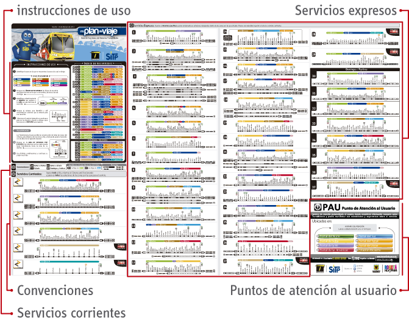
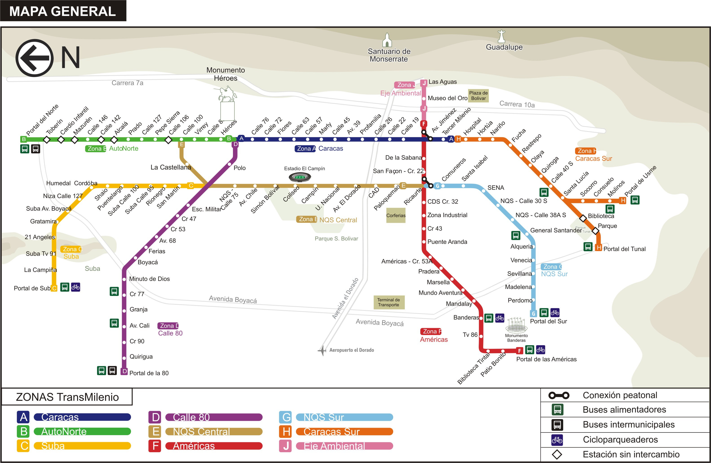

This Is Not A Subway Map / portfolio
{kind=link}
About & Process: I created this map while living in Bogota, Colombia, out of frustration over the signage present in the stations of the Transmilenio, the bus rapid transit system in the city. Going through this process of creating a map for a bus rapid transit system made me realize just how difficult it is to design for this kind of system. Subway systems are more straightforward; in most systems, trains stop at every station along any given line (with the NYC subway being a notable exception, but even that has just a few express lines). However, in order for the Transmilenio to save time in the system, there are a a wide variety of express routes that stop at different stations, with seemingly little rhyme or reason. Thus, an overall map of the system like the one that I created is useful only for giving the user the big picture; it can’t actually help a person decide which bus to take to get from one point to another. I never found the perfect way to give both an overall view of the system while also helping the user plan his/her trip in one static image.
Background: Due to its sheer quantity of routes, Transmilenio is notorious for being nearly impossible to figure out how to get from Point A to Point B. Here’s an example of the schematic diagram posted in each station to figure out which route to take:

Imagine standing in a crowded Transmilenio station and needing to determine which bus to get on. You could be standing there for a while, especially if you’re completely unfamiliar with the system.
Despite the Transmilenio having dedicated lanes of traffic, the fact that it runs on surface streets limits its capacity. Though subway trains can have up to ten cars, system buses usually have two cars or, at most, three. Since the stations are placed in the middle of major streets, they are limited in the width that they can take up and thus get very crowded during rush hour. Buses also must stop at red lights, which inherently slows down the system.
For reference, this is roughly what the Transmilenio map looked like when I made this alternative in 2013:

Thanks to Cameron Booth of Transit Maps for inspiration and tips on his blog.